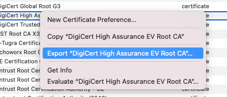
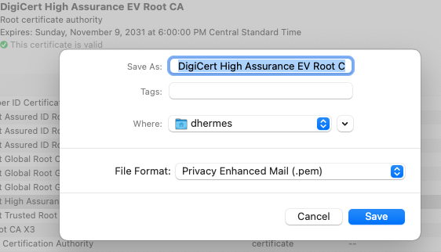

openssl Tooling¶
Checking Certificate Presented by Server¶
By invoking
$ openssl s_client -showcerts -connect github.com:443 -servername github.com
we can see a wealth of information about a given hostname (e.g. here
github.com)
$ openssl s_client -showcerts -connect github.com:443 -servername github.com
CONNECTED(00000005)
depth=2 C = US, O = DigiCert Inc, OU = www.digicert.com, CN = DigiCert High Assurance EV Root CA
verify return:1
depth=1 C = US, O = DigiCert Inc, OU = www.digicert.com, CN = DigiCert SHA2 High Assurance Server CA
verify return:1
depth=0 C = US, ST = California, L = San Francisco, O = "GitHub, Inc.", CN = github.com
verify return:1
---
Certificate chain
0 s:/C=US/ST=California/L=San Francisco/O=GitHub, Inc./CN=github.com
i:/C=US/O=DigiCert Inc/OU=www.digicert.com/CN=DigiCert SHA2 High Assurance Server CA
-----BEGIN CERTIFICATE-----
MIIG1TCCBb2gAwIBAgIQBVfICygmg6F7ChFEkylreTANBgkqhkiG9w0BAQsFADBw
MQswCQYDVQQGEwJVUzEVMBMGA1UEChMMRGlnaUNlcnQgSW5jMRkwFwYDVQQLExB3
d3cuZGlnaWNlcnQuY29tMS8wLQYDVQQDEyZEaWdpQ2VydCBTSEEyIEhpZ2ggQXNz
dXJhbmNlIFNlcnZlciBDQTAeFw0yMDA1MDUwMDAwMDBaFw0yMjA1MTAxMjAwMDBa
MGYxCzAJBgNVBAYTAlVTMRMwEQYDVQQIEwpDYWxpZm9ybmlhMRYwFAYDVQQHEw1T
YW4gRnJhbmNpc2NvMRUwEwYDVQQKEwxHaXRIdWIsIEluYy4xEzARBgNVBAMTCmdp
dGh1Yi5jb20wggEiMA0GCSqGSIb3DQEBAQUAA4IBDwAwggEKAoIBAQC7MrTQ2J6a
nox5KUwrqO9cQ9STO5R4/zBUxxvI5S8bmc0QjWfIVAwHWuT0Bn/H1oS0LM0tTkQm
ARrqN77v9McVB8MWTGsmGQnS/1kQRFuKiYGUHf7iX5pfijbYsOkfb4AiVKysKUNV
UtgVvpJoe5RWURjQp9XDWkeo2DzGHXLcBDadrM8VLC6H1/D9SXdVruxKqduLKR41
Z/6dlSDdeY1gCnhz3Ch1pYbfMfsTCTamw+AtRtwlK3b2rfTHffhowjuzM15UKt+b
rr/cEBlAjQTva8rutYU9K9ONgl+pG2u7Bv516DwmNy8xz9wOjTeOpeh0M9N/ewq8
cgbR87LFaxi1AgMBAAGjggNzMIIDbzAfBgNVHSMEGDAWgBRRaP+QrwIHdTzM2WVk
YqISuFlyOzAdBgNVHQ4EFgQUYwLSXQJf943VWhKedhE2loYsikgwJQYDVR0RBB4w
HIIKZ2l0aHViLmNvbYIOd3d3LmdpdGh1Yi5jb20wDgYDVR0PAQH/BAQDAgWgMB0G
A1UdJQQWMBQGCCsGAQUFBwMBBggrBgEFBQcDAjB1BgNVHR8EbjBsMDSgMqAwhi5o
dHRwOi8vY3JsMy5kaWdpY2VydC5jb20vc2hhMi1oYS1zZXJ2ZXItZzYuY3JsMDSg
MqAwhi5odHRwOi8vY3JsNC5kaWdpY2VydC5jb20vc2hhMi1oYS1zZXJ2ZXItZzYu
Y3JsMEwGA1UdIARFMEMwNwYJYIZIAYb9bAEBMCowKAYIKwYBBQUHAgEWHGh0dHBz
Oi8vd3d3LmRpZ2ljZXJ0LmNvbS9DUFMwCAYGZ4EMAQICMIGDBggrBgEFBQcBAQR3
MHUwJAYIKwYBBQUHMAGGGGh0dHA6Ly9vY3NwLmRpZ2ljZXJ0LmNvbTBNBggrBgEF
BQcwAoZBaHR0cDovL2NhY2VydHMuZGlnaWNlcnQuY29tL0RpZ2lDZXJ0U0hBMkhp
Z2hBc3N1cmFuY2VTZXJ2ZXJDQS5jcnQwDAYDVR0TAQH/BAIwADCCAXwGCisGAQQB
1nkCBAIEggFsBIIBaAFmAHUAKXm+8J45OSHwVnOfY6V35b5XfZxgCvj5TV0mXCVd
x4QAAAFx5ltprwAABAMARjBEAiAuWGCWxN/M0Ms3KOsqFjDMHT8Aq0SlHfQ68KDg
rVU6AAIgDA+2EB0D5W5r0i4Nhljx6ABlIByzrEdfcxiOD/o6//EAdQAiRUUHWVUk
VpY/oS/x922G4CMmY63AS39dxoNcbuIPAgAAAXHmW2nTAAAEAwBGMEQCIBp+XQKa
UDiPHwjBxdv5qvgyALKaysKqMF60gqem8iPRAiAk9Dp5+VBUXfSHqyW+tVShUigh
ndopccf8Gs21KJ4jXgB2AFGjsPX9AXmcVm24N3iPDKR6zBsny/eeiEKaDf7UiwXl
AAABceZbahsAAAQDAEcwRQIgd/5HcxT4wfNV8zavwxjYkw2TYBAuRCcqp1SjWKFn
4EoCIQDHSTHxnbpxWFbP6v5Y6nGFZCDjaHgd9HrzUv2J/DaacDANBgkqhkiG9w0B
AQsFAAOCAQEAhjKPnBW4r+jR3gg6RA5xICTW/A5YMcyqtK0c1QzFr8S7/l+skGpC
yCHrJfFrLDeyKqgabvLRT6YvvM862MGfMMDsk+sKWtzLbDIcYG7sbviGpU+gtG1q
B0ohWNApfWWKyNpquqvwdSEzAEBvhcUT5idzbK7q45bQU9vBIWgQz+PYULAU7KmY
z7jOYV09o22TNMQT+hFmo92+EBlwSeIETYEsHy5ZxixTRTvu9hP00CyEbiht5OTK
5EiJG6vsIh/uEtRsdenMCxV06W2f20Af4iSFo0uk6c1ryHefh08FcwA4pSNUaPyi
Pb8YGQ6o/blejFzo/OSiUnDueafSJ0p6SQ==
-----END CERTIFICATE-----
1 s:/C=US/O=DigiCert Inc/OU=www.digicert.com/CN=DigiCert SHA2 High Assurance Server CA
i:/C=US/O=DigiCert Inc/OU=www.digicert.com/CN=DigiCert High Assurance EV Root CA
-----BEGIN CERTIFICATE-----
MIIEsTCCA5mgAwIBAgIQBOHnpNxc8vNtwCtCuF0VnzANBgkqhkiG9w0BAQsFADBs
MQswCQYDVQQGEwJVUzEVMBMGA1UEChMMRGlnaUNlcnQgSW5jMRkwFwYDVQQLExB3
d3cuZGlnaWNlcnQuY29tMSswKQYDVQQDEyJEaWdpQ2VydCBIaWdoIEFzc3VyYW5j
ZSBFViBSb290IENBMB4XDTEzMTAyMjEyMDAwMFoXDTI4MTAyMjEyMDAwMFowcDEL
MAkGA1UEBhMCVVMxFTATBgNVBAoTDERpZ2lDZXJ0IEluYzEZMBcGA1UECxMQd3d3
LmRpZ2ljZXJ0LmNvbTEvMC0GA1UEAxMmRGlnaUNlcnQgU0hBMiBIaWdoIEFzc3Vy
YW5jZSBTZXJ2ZXIgQ0EwggEiMA0GCSqGSIb3DQEBAQUAA4IBDwAwggEKAoIBAQC2
4C/CJAbIbQRf1+8KZAayfSImZRauQkCbztyfn3YHPsMwVYcZuU+UDlqUH1VWtMIC
Kq/QmO4LQNfE0DtyyBSe75CxEamu0si4QzrZCwvV1ZX1QK/IHe1NnF9Xt4ZQaJn1
itrSxwUfqJfJ3KSxgoQtxq2lnMcZgqaFD15EWCo3j/018QsIJzJa9buLnqS9UdAn
4t07QjOjBSjEuyjMmqwrIw14xnvmXnG3Sj4I+4G3FhahnSMSTeXXkgisdaScus0X
sh5ENWV/UyU50RwKmmMbGZJ0aAo3wsJSSMs5WqK24V3B3aAguCGikyZvFEohQcft
bZvySC/zA/WiaJJTL17jAgMBAAGjggFJMIIBRTASBgNVHRMBAf8ECDAGAQH/AgEA
MA4GA1UdDwEB/wQEAwIBhjAdBgNVHSUEFjAUBggrBgEFBQcDAQYIKwYBBQUHAwIw
NAYIKwYBBQUHAQEEKDAmMCQGCCsGAQUFBzABhhhodHRwOi8vb2NzcC5kaWdpY2Vy
dC5jb20wSwYDVR0fBEQwQjBAoD6gPIY6aHR0cDovL2NybDQuZGlnaWNlcnQuY29t
L0RpZ2lDZXJ0SGlnaEFzc3VyYW5jZUVWUm9vdENBLmNybDA9BgNVHSAENjA0MDIG
BFUdIAAwKjAoBggrBgEFBQcCARYcaHR0cHM6Ly93d3cuZGlnaWNlcnQuY29tL0NQ
UzAdBgNVHQ4EFgQUUWj/kK8CB3U8zNllZGKiErhZcjswHwYDVR0jBBgwFoAUsT7D
aQP4v0cB1JgmGggC72NkK8MwDQYJKoZIhvcNAQELBQADggEBABiKlYkD5m3fXPwd
aOpKj4PWUS+Na0QWnqxj9dJubISZi6qBcYRb7TROsLd5kinMLYBq8I4g4Xmk/gNH
E+r1hspZcX30BJZr01lYPf7TMSVcGDiEo+afgv2MW5gxTs14nhr9hctJqvIni5ly
/D6q1UEL2tU2ob8cbkdJf17ZSHwD2f2LSaCYJkJA69aSEaRkCldUxPUd1gJea6zu
xICaEnL6VpPX/78whQYwvwt/Tv9XBZ0k7YXDK/umdaisLRbvfXknsuvCnQsH6qqF
0wGjIChBWUMo0oHjqvbsezt3tkBigAVBRQHvFwY+3sAzm2fTYS5yh+Rp/BIAV0Ae
cPUeybQ=
-----END CERTIFICATE-----
---
Server certificate
subject=/C=US/ST=California/L=San Francisco/O=GitHub, Inc./CN=github.com
issuer=/C=US/O=DigiCert Inc/OU=www.digicert.com/CN=DigiCert SHA2 High Assurance Server CA
---
No client certificate CA names sent
Server Temp Key: ECDH, X25519, 253 bits
---
SSL handshake has read 3439 bytes and written 308 bytes
---
New, TLSv1/SSLv3, Cipher is ECDHE-RSA-AES128-GCM-SHA256
Server public key is 2048 bit
Secure Renegotiation IS supported
Compression: NONE
Expansion: NONE
No ALPN negotiated
SSL-Session:
Protocol : TLSv1.2
Cipher : ECDHE-RSA-AES128-GCM-SHA256
Session-ID: 42E113D36022F96C0928D4F294DFFBF7066AD8F6D56EEB0BD7FEBA15E11CDDB8
Session-ID-ctx:
Master-Key: 976229BEF07105DD3C9E1EDCB4378FFBC564651B0C614D92EDC472F11955CF5EBB449DF1D380F4488219BE0F1EC24211
Start Time: 1612538529
Timeout : 7200 (sec)
Verify return code: 0 (ok)
---
closed
Chain¶
depth=2 C = US, O = DigiCert Inc, OU = www.digicert.com, CN = DigiCert High Assurance EV Root CA
verify return:1
depth=1 C = US, O = DigiCert Inc, OU = www.digicert.com, CN = DigiCert SHA2 High Assurance Server CA
verify return:1
depth=0 C = US, ST = California, L = San Francisco, O = "GitHub, Inc.", CN = github.com
verify return:1
The Common Name (CN) is what we see in Google Chrome as a brief description
of each certificate in the chain. The chain is composed of
The leaf (or server) certificate, i.e. here it’s the
depth=0certificate withCN = github.com.A series of 0 or more intermediate CA (certificate authority) certificates, here the
depth=1certificate withCN = DigiCert SHA2 High Assurance Server CAis the only intermediate. (More on intermediates later.)A root CA certificate, which should be the only part of the chain trusted by the client (e.g. Google Chrome,
curl, your code, etc.). Here it’s thedepth=2certificate withCN = DigiCert High Assurance EV Root CA
We see later down the output of openssl s_client lines like
0 s:/C=US/ST=California/L=San Francisco/O=GitHub, Inc./CN=github.com
i:/C=US/O=DigiCert Inc/OU=www.digicert.com/CN=DigiCert SHA2 High Assurance Server CA
This indicates the subject (s) “Distinguished Name” and the issuer (i)
Distinguished Name. Every entry in the chain points to its
issuer, i.e. so we can make our way back up the chain. For roots, the
expectation is that the issuer is equal to the subject; we usually refer to
such certificates as “self-signed”.
Leaf¶
The leaf certificate is the only one actually controlled by the server. The server needs to prove that it owns the private key corresponding to the public certificate by providing a signature that can be verified with the public key. (The public key is stored as part of a public certificate.)
To see the full complement of metadata present in a certificate, we again
turn to the openssl command line tool:
$ cat ./docs/tls-certs/github-dot-com.pem
-----BEGIN CERTIFICATE-----
MIIG1TCCBb2gAwIBAgIQBVfICygmg6F7ChFEkylreTANBgkqhkiG9w0BAQsFADBw
...
Pb8YGQ6o/blejFzo/OSiUnDueafSJ0p6SQ==
-----END CERTIFICATE-----
$
$ openssl x509 -noout -text -in ./docs/tls-certs/github-dot-com.pem
Certificate:
Data:
Version: 3 (0x2)
Serial Number:
05:57:c8:0b:28:26:83:a1:7b:0a:11:44:93:29:6b:79
Signature Algorithm: sha256WithRSAEncryption
Issuer: C=US, O=DigiCert Inc, OU=www.digicert.com, CN=DigiCert SHA2 High Assurance Server CA
Validity
Not Before: May 5 00:00:00 2020 GMT
Not After : May 10 12:00:00 2022 GMT
Subject: C=US, ST=California, L=San Francisco, O=GitHub, Inc., CN=github.com
Subject Public Key Info:
Public Key Algorithm: rsaEncryption
Public-Key: (2048 bit)
Modulus:
00:bb:32:b4:d0:d8:9e:9a:9e:8c:79:29:4c:2b:a8:
ef:5c:43:d4:93:3b:94:78:ff:30:54:c7:1b:c8:e5:
2f:1b:99:cd:10:8d:67:c8:54:0c:07:5a:e4:f4:06:
7f:c7:d6:84:b4:2c:cd:2d:4e:44:26:01:1a:ea:37:
be:ef:f4:c7:15:07:c3:16:4c:6b:26:19:09:d2:ff:
59:10:44:5b:8a:89:81:94:1d:fe:e2:5f:9a:5f:8a:
36:d8:b0:e9:1f:6f:80:22:54:ac:ac:29:43:55:52:
d8:15:be:92:68:7b:94:56:51:18:d0:a7:d5:c3:5a:
47:a8:d8:3c:c6:1d:72:dc:04:36:9d:ac:cf:15:2c:
2e:87:d7:f0:fd:49:77:55:ae:ec:4a:a9:db:8b:29:
1e:35:67:fe:9d:95:20:dd:79:8d:60:0a:78:73:dc:
28:75:a5:86:df:31:fb:13:09:36:a6:c3:e0:2d:46:
dc:25:2b:76:f6:ad:f4:c7:7d:f8:68:c2:3b:b3:33:
5e:54:2a:df:9b:ae:bf:dc:10:19:40:8d:04:ef:6b:
ca:ee:b5:85:3d:2b:d3:8d:82:5f:a9:1b:6b:bb:06:
fe:75:e8:3c:26:37:2f:31:cf:dc:0e:8d:37:8e:a5:
e8:74:33:d3:7f:7b:0a:bc:72:06:d1:f3:b2:c5:6b:
18:b5
Exponent: 65537 (0x10001)
X509v3 extensions:
X509v3 Authority Key Identifier:
keyid:51:68:FF:90:AF:02:07:75:3C:CC:D9:65:64:62:A2:12:B8:59:72:3B
X509v3 Subject Key Identifier:
63:02:D2:5D:02:5F:F7:8D:D5:5A:12:9E:76:11:36:96:86:2C:8A:48
X509v3 Subject Alternative Name:
DNS:github.com, DNS:www.github.com
X509v3 Key Usage: critical
Digital Signature, Key Encipherment
X509v3 Extended Key Usage:
TLS Web Server Authentication, TLS Web Client Authentication
X509v3 CRL Distribution Points:
Full Name:
URI:http://crl3.digicert.com/sha2-ha-server-g6.crl
Full Name:
URI:http://crl4.digicert.com/sha2-ha-server-g6.crl
X509v3 Certificate Policies:
Policy: 2.16.840.1.114412.1.1
CPS: https://www.digicert.com/CPS
Policy: 2.23.140.1.2.2
Authority Information Access:
OCSP - URI:http://ocsp.digicert.com
CA Issuers - URI:http://cacerts.digicert.com/DigiCertSHA2HighAssuranceServerCA.crt
X509v3 Basic Constraints: critical
CA:FALSE
1.3.6.1.4.1.11129.2.4.2:
...h.f.u.)y...99!.Vs.c.w..W}.`
.`..D'*.T.X.g.J.!..I1...qXV...X.q.d .hx..z.R...6.p\n......q.[i......F0D. .~]..P8.........2......0^.....#.. $.:y.PT]...%..T.R(!..)q.....(.#^.v.Q.....y.Vm.7x...z..'....B.
Signature Algorithm: sha256WithRSAEncryption
86:32:8f:9c:15:b8:af:e8:d1:de:08:3a:44:0e:71:20:24:d6:
fc:0e:58:31:cc:aa:b4:ad:1c:d5:0c:c5:af:c4:bb:fe:5f:ac:
90:6a:42:c8:21:eb:25:f1:6b:2c:37:b2:2a:a8:1a:6e:f2:d1:
4f:a6:2f:bc:cf:3a:d8:c1:9f:30:c0:ec:93:eb:0a:5a:dc:cb:
6c:32:1c:60:6e:ec:6e:f8:86:a5:4f:a0:b4:6d:6a:07:4a:21:
58:d0:29:7d:65:8a:c8:da:6a:ba:ab:f0:75:21:33:00:40:6f:
85:c5:13:e6:27:73:6c:ae:ea:e3:96:d0:53:db:c1:21:68:10:
cf:e3:d8:50:b0:14:ec:a9:98:cf:b8:ce:61:5d:3d:a3:6d:93:
34:c4:13:fa:11:66:a3:dd:be:10:19:70:49:e2:04:4d:81:2c:
1f:2e:59:c6:2c:53:45:3b:ee:f6:13:f4:d0:2c:84:6e:28:6d:
e4:e4:ca:e4:48:89:1b:ab:ec:22:1f:ee:12:d4:6c:75:e9:cc:
0b:15:74:e9:6d:9f:db:40:1f:e2:24:85:a3:4b:a4:e9:cd:6b:
c8:77:9f:87:4f:05:73:00:38:a5:23:54:68:fc:a2:3d:bf:18:
19:0e:a8:fd:b9:5e:8c:5c:e8:fc:e4:a2:52:70:ee:79:a7:d2:
27:4a:7a:49
Some things to zoom in on here are subject, issuer and dates relevant to expiration:
...
Issuer: C=US, O=DigiCert Inc, OU=www.digicert.com, CN=DigiCert SHA2 High Assurance Server CA
Validity
Not Before: May 5 00:00:00 2020 GMT
Not After : May 10 12:00:00 2022 GMT
Subject: C=US, ST=California, L=San Francisco, O=GitHub, Inc., CN=github.com
...
as well as X509v3 metadata indicating what the certificate can be used for
...
X509v3 Subject Alternative Name:
DNS:github.com, DNS:www.github.com
...
X509v3 Extended Key Usage:
TLS Web Server Authentication, TLS Web Client Authentication
...
These indicate that a certificate authority that we trust has deemed this
leaf certificate able to represent the DNS names github.com and
www.github.com and can be used both as a TLS server certificate and a TLS
client certificate.
Intermediate¶
As we saw in the openssl s_client output, the intermediate certificate was
also presented by the server:
$ cat ./docs/tls-certs/DigiCert-SHA2-High-Assurance-Server-CA.pem
-----BEGIN CERTIFICATE-----
MIIEsTCCA5mgAwIBAgIQBOHnpNxc8vNtwCtCuF0VnzANBgkqhkiG9w0BAQsFADBs
...
cPUeybQ=
-----END CERTIFICATE-----
$
$ openssl x509 -noout -text -in ./docs/tls-certs/DigiCert-SHA2-High-Assurance-Server-CA.pem
...
Issuer: C=US, O=DigiCert Inc, OU=www.digicert.com, CN=DigiCert High Assurance EV Root CA
Validity
Not Before: Oct 22 12:00:00 2013 GMT
Not After : Oct 22 12:00:00 2028 GMT
Subject: C=US, O=DigiCert Inc, OU=www.digicert.com, CN=DigiCert SHA2 High Assurance Server CA
...
X509v3 extensions:
X509v3 Basic Constraints: critical
CA:TRUE, pathlen:0
X509v3 Key Usage: critical
Digital Signature, Certificate Sign, CRL Sign
X509v3 Extended Key Usage:
TLS Web Server Authentication, TLS Web Client Authentication
..
In particular note that this certificate is valid for 15 years, as opposed to
the leaf certificate which was only valid for 2 years. Additionally, the
CA:TRUE, pathlen:0 part means that we can trust this certificate to be used
as a CA (an intermediate CA), but pathlen:0 means it can only sign leaf
certificates, i.e. it can’t create a child CA.
Root¶
Where is the root? It’s fairly common practice for servers to minimize the amount of data they need to send by omitting the root CA from the set of certificates they present. This is because we already have the full expectation that the client will trust the root CA, hence the client should already possess the root CA certificate.
 $ cat ./docs/tls-certs/DigiCert-High-Assurance-EV-Root-CA.pem
-----BEGIN CERTIFICATE-----
MIIDxTCCAq2gAwIBAgIQAqxcJmoLQJuPC3nyrkYldzANBgkqhkiG9w0BAQUFADBs
...
+OkuE6N36B9K
-----END CERTIFICATE-----
$
$ openssl x509 -noout -text -in ./docs/tls-certs/DigiCert-High-Assurance-EV-Root-CA.pem
...
Issuer: C=US, O=DigiCert Inc, OU=www.digicert.com, CN=DigiCert High Assurance EV Root CA
Validity
Not Before: Nov 10 00:00:00 2006 GMT
Not After : Nov 10 00:00:00 2031 GMT
Subject: C=US, O=DigiCert Inc, OU=www.digicert.com, CN=DigiCert High Assurance EV Root CA
...
X509v3 extensions:
X509v3 Key Usage: critical
Digital Signature, Certificate Sign, CRL Sign
X509v3 Basic Constraints: critical
CA:TRUE
...
This certificate is valid for 25 years, as opposed to 15 years for the intermediate.
Links in the Chain¶
Just presenting the Issuer isn’t enough to cryptographically prove
that each link in the chain is legitimate. How can we verify each link?
First, ensure the intermediate was issued by the root
$ openssl verify \
> -verbose \
> -CAfile ./docs/tls-certs/DigiCert-High-Assurance-EV-Root-CA.pem \
> ./docs/tls-certs/DigiCert-SHA2-High-Assurance-Server-CA.pem
./docs/tls-certs/DigiCert-SHA2-High-Assurance-Server-CA.pem: OK
We can also just omit the -CAfile flag because the intermediate has been
signed by a system root:
$ openssl verify \
> -verbose \
> ./docs/tls-certs/DigiCert-SHA2-High-Assurance-Server-CA.pem
./docs/tls-certs/DigiCert-SHA2-High-Assurance-Server-CA.pem: OK
Using the same openssl verify command, can we verify the leaf?
$ openssl verify \
> -verbose \
> ./docs/tls-certs/github-dot-com.pem
./docs/tls-certs/github-dot-com.pem: C = US, ST = California, L = San Francisco, O = "GitHub, Inc.", CN = github.com
error 20 at 0 depth lookup:unable to get local issuer certificate
$
$
$ openssl verify \
> -verbose \
> -CAfile ./docs/tls-certs/DigiCert-SHA2-High-Assurance-Server-CA.pem \
> ./docs/tls-certs/github-dot-com.pem
./docs/tls-certs/github-dot-com.pem: C = US, O = DigiCert Inc, OU = www.digicert.com, CN = DigiCert SHA2 High Assurance Server CA
error 2 at 1 depth lookup:unable to get issuer certificate
This first local issuer failure indicates that the leaf’s issuer is not
known to openssl. The second issuer failure indicates that the
intermediate’s issuer is not known to openssl. The second error is a bit
subtle. Since we’ve specified -CAfile as an override for the system
root store, the root is no longer part of this verify command. From the
docs:
-CAfile: A file of trusted certificates. The file should contain multiple
certificates in PEM format concatenated together.
-untrusted: A file of untrusted certificates. The file should contain multiple
certificates in PEM format concatenated together.
So we actually need to specify the intermediate in the set of “extra” untrusted certificates:
$ openssl verify \
> -verbose \
> -untrusted ./docs/tls-certs/DigiCert-SHA2-High-Assurance-Server-CA.pem \
> ./docs/tls-certs/github-dot-com.pem
./docs/tls-certs/github-dot-com.pem: OK